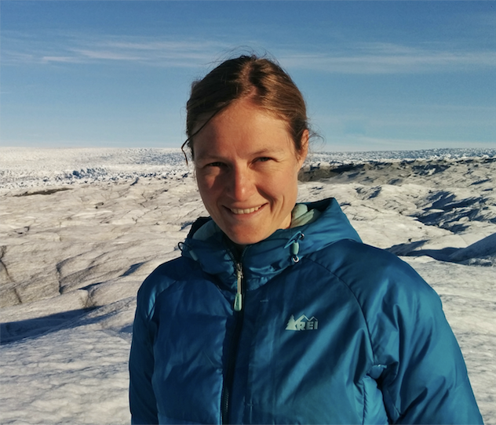

I am a polar scientist working in the areas of ice-ocean interactions and polar oceanography. In March 2026 I joined the Laboratoire de Physique École normale supérieure de Lyon as a CNRS Junior Professor. I am part of the Climate Physics Group - get in touch if you are looking for a PhD project, a postdoc position, or a masters internship and would like to work on problems in polar physics and climate.
I obtained my PhD in Atmosphere Ocean Science and Mathematics from the Courant Institute of Mathematical Sciences at New York University under the guidance of David Holland. After that I received a Marie-Curie Fellowship and spent three and half years at the British Antarctic Survey (BAS), studying ocean circulation beneath ice shelves from phase-sensitive radar data. Between 2022 and 2025 I worked at the Los Alamos National Laboratory (LANL), funded by the Director's Fellowship. I used the Energy Exascale Earth System Model to study the role of freshwater fluxes from Antarctica on the Southern Ocean climate.